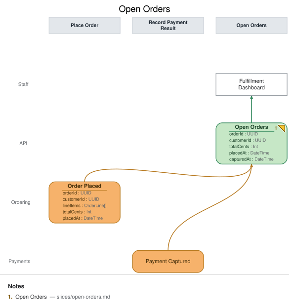

Open Orders
State View · implemented
{kind=link}
| Kind | Name | Detail |
|---|---|---|
| view | Open Orders | from Order Placed, Payment Captured · { orderId: UUID, customerId: UUID, totalCents: Int, placedAt: DateTime, capturedAt: DateTime } |
| ui | Fulfillment Dashboard | @Staff |
Slice: Open Orders

Intent
Staff need a single working list of orders that have been placed but not yet fully paid and fulfilled, so they know what to prepare and ship. This view is Meridian Goods' operational front door for order fulfillment.
Trigger & Actor
No user action triggers this slice directly — it's a projection that updates automatically
whenever Order Placed (this model's slices/place-order.md) or Payment Captured (owned by
the payments slices) is recorded. Staff consult it on demand via the Fulfillment
Dashboard.
Read Model / View
- View:
Open Ordersbuilt from events:Order Placed,Payment Captured - Consumed by:
Fulfillment Dashboard@Staff - Freshness / consistency expectation: eventual — staff read a projection that lags event recording by however long the projector takes to catch up; there is no synchronous read of the write side.
Invariants / Business Rules
- INV-OO-1: The fold is idempotent. Re-projecting the same
Order PlacedorPayment Capturedevent (redelivery, replay, projector restart) never creates a duplicate row or double-applies a field — each order appears exactly once, keyed byorderId. - INV-OO-2:
capturedAtis populated only when aPayment Capturedevent has actually been projected for thatorderId; until then it stays genuinely absent (null), never backfilled, defaulted, or guessed from elapsed time. The row's shape always reflects which events have actually landed, not an inference about what "should" have happened by now.
Scenarios (Given / When / Then)
Order Placedlands — Given no prior row for thisorderId, WhenOrder Placedis projected, Then a newOpen Ordersrow appears withorderId,customerId,totalCents,placedAtpopulated andcapturedAtabsent.Payment Capturedlands — Given an existingOpen Ordersrow for thisorderId(from a priorOrder Placed), WhenPayment Capturedis projected, Then that same row is updated in place withcapturedAtpopulated — no new row is created (INV-OO-1).- Redelivered event (INV-OO-1) — Given an
Open Ordersrow already reflects a givenOrder Placed(orPayment Captured) event, When that same event is redelivered to the projector (at-least-once delivery, replay), Then the row is unchanged — no duplicate row, no field double-applied.
Alternate & Error Flows
- Out-of-order delivery: if
Payment Capturedwere somehow projected before its matchingOrder Placed(not expected in-order, but a projector should be defensive), the projector creates the row from whichever event lands first and fills in the rest as later events arrive — it never rejects an event for arriving "early." - Idempotency mechanism: the projector folds by
orderId, so replay/redelivery is naturally idempotent (INV-OO-1) as long as the fold logic is itself pure — no counters, no "add one more line" style updates that would double on replay.
Non-Functional Requirements
- Security / authz: visible to Staff only (fulfillment/ops role); not exposed to Customers.
- PII & compliance: carries
customerId(a reference, not raw PII) and order totals; no payment instrument data. - Performance / SLA: none beyond ordinary dashboard-refresh latency for this demo.
Dependencies & Read Models Affected
- Upstream events this slice relies on:
Order Placed(slices/place-order.md),Payment Captured(payments slices, owned separately — field namesorderId,capturedAtmatch this view's fields by the shared field contract). - Downstream read models / slices affected: none — this is a terminal read model for the Staff persona in this model.
Open Questions
- Does a fulfilled/shipped order ever leave this list? Resolved (deferred): not in this
model — fulfillment and cancellation are out of scope for the base slices (see
domain-decisions.md's cancellation-deferred bullet).Open Ordersshows every placed order regardless of downstream fulfillment state for now.